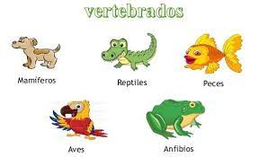
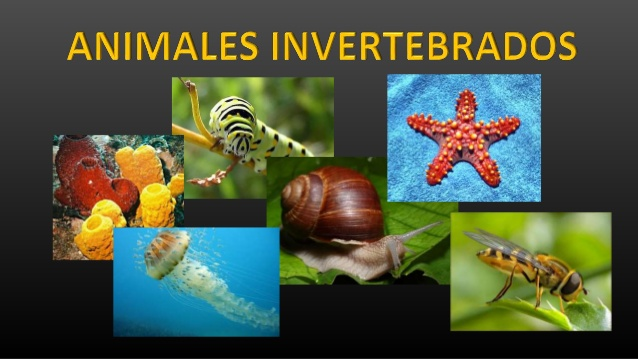

Erick Favian Aguilar Jimenez
WebQuest del Reino Animal
Introduccion
Tareas
Proceso
Recursos
Evaluacion
Conclucio
Creditos
1. Introducción.
El reino animal.
El reino animal incluye los seres vivos pluricelulares y con tejidos que además tienen nutrición heterótrofa, los animales se clasifican en dos grandes grupos:
- Los vertebrados que tienen esqueleto interno, columna vertebral y su cuerpo está dividido en tres partes: cabeza, tronco y extremidades.
- Los invertebrados que no tienen ni esqueleto interno ni columna vertebral. Pero si tienen otras partes duras como la concha, el caparazón o exoesqueleto. Todos son ovíparos y al llegar a la edad adulta experimentan cambios llamados metamorfosis.


2. Tareas.
Realizar de forma individual un listado y resumen de los aspectos mas destacados de los tipos de animales:
- vertebrados
- invertebrados
3. Proceso.
- Investigar e identificar los grupos o clases de los animales: Anfibios, Reptiles, Moluscos y Artropodos.
- De cada grupo identificar sus caracteristicas (Alimentacion, Reproduccion, Respiracion, Tipo de tiel y Habitad).
- Realizar el listado y el resumen de lo investigado.
4. Recursos.
Aqui tienes los enlaces pero puedes buscar otros por tu cuenta
5. Evaluación.
Se evaluara el trabajo segun la informacion, claridad, orden y ortografia.
- La presentacion del trabajo. (2 puntos)
- Claridad de la informacion. (3 puntos)
- Informacion completa. (3 puntos)
- Ortografia. (1 puntos)
- Orden. (1 puntos)
6. Conclusión.
Escriir una reflexion. sobre los aprendizajes y tu opinion sobre ello.
7. Créditos.
Esta webQuest ha sido elaborada por Erick Favian Aguilar Jimenez. o no?
Ha sido creada durante el mes de mayo, pero ha sido actualizada...
.